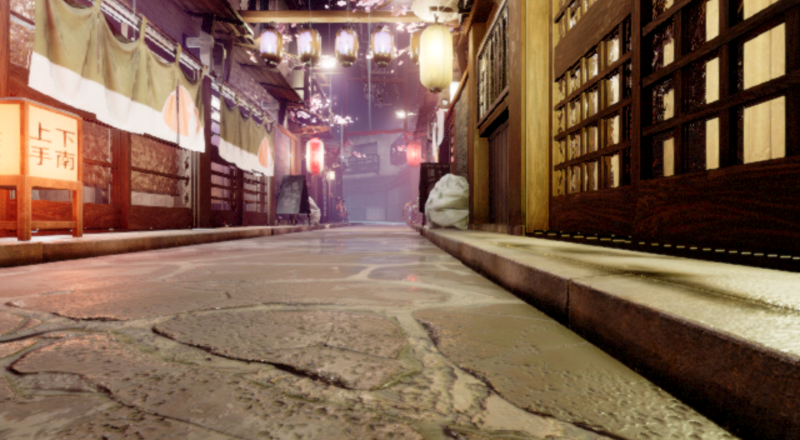
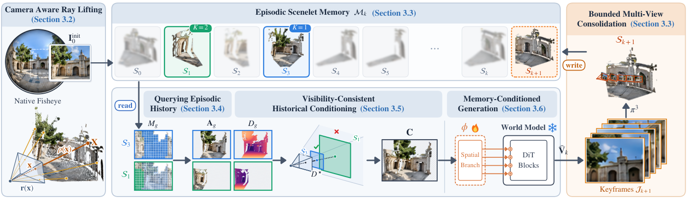
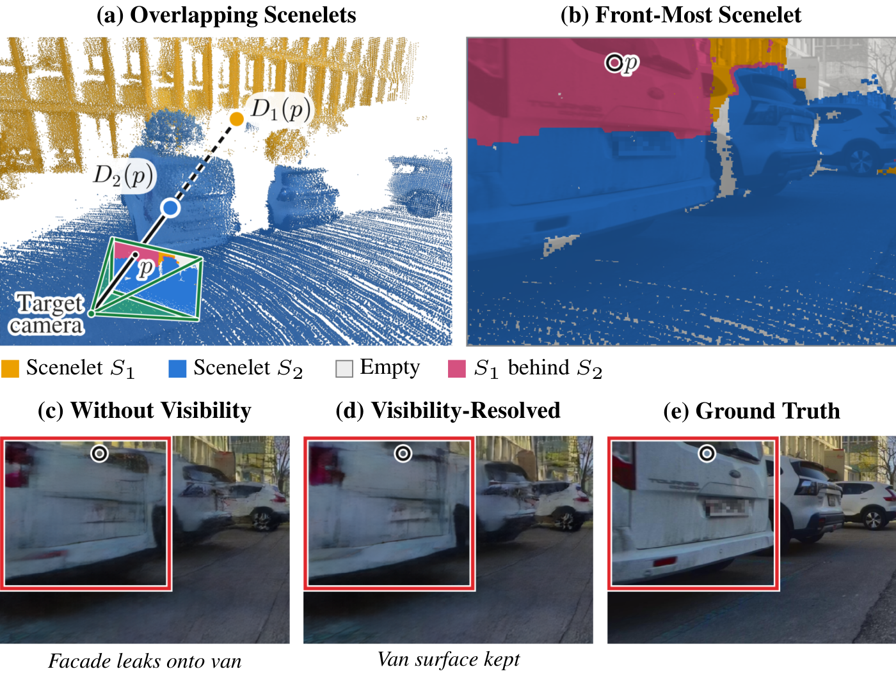
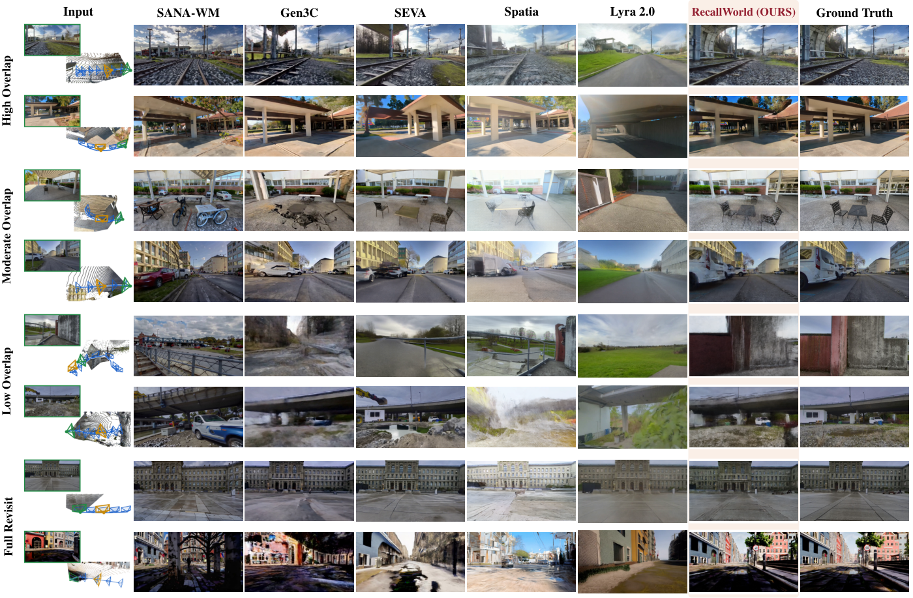

Lantern street
RecallWorld
Ground Truth
The videos could not load. Please refresh to retry.
Starting Image

Lantern street. Drag the center to compare the same view across methods.
The videos could not load. Please refresh to retry.
Explore more worlds below
Video world models generate plausible novel views but often lack persistent memory, failing to preserve a place's geometry and appearance when an agent revisits a scene. A central challenge is how previous views should be effectively used for creating memory. Reconstructing them independently underutilizes geometric constraints between nearby views, while repeatedly reconstructing a growing history can propagate later prediction errors into earlier geometry. We introduce RecallWorld, a persistent embodied video world model that jointly reconstructs short multi-view episodes into Scenelets while keeping geometry independent across episodes. Starting from a single source image, camera-aware ray lifting places perspective and native fisheye images in a common world frame, retaining wide-field content for perspective generation. Each generated segment extends the Scenelet memory and conditions subsequent generation. Coverage-based retrieval selects complementary Scenelets from the full history, while target-view visibility is resolved geometrically before appearance fusion, providing consistent memory conditioning for guiding subsequent generation. Across four datasets, RecallWorld improves revisit PSNR over the strongest evaluated baseline by 2.6 dB on partial revisits and 3.9 dB on full cycles, demonstrating substantially stronger preservation of scene identity across exploration and return.
A place should remain in memory after it leaves the frame. turns completed video segments into 3D Scenelets, retaining their geometry and appearance to guide generation when the camera returns.

Overview of RecallWorld. Ray lifting unifies perspective and native fisheye inputs in 3D; consolidation forms episodic Scenelet memory . Complementary retrieval, target-view projection and visibility resolution form , which conditions SANA-WM via a spatial-conditioning branch. Generated keyframes are jointly reconstructed into for continued memory-aware generation.
Perspective and fisheye observations. One spatial memory. retains observed geometry and appearance beyond the initial perspective field of view, so wider fisheye coverage can guide generation as those surfaces enter the camera's view.
Memory must respect what the camera can see. resolves depth conflicts before fusing appearance, preventing farther projections from replacing an occluding front surface.

Front surfaces stay in front. Our visibility guidance resolves conflicting projections before combining appearance. This GrandTour example shows the resulting spatial condition.
Compare RecallWorld and other methods with Ground Truth.
The videos could not load. Please refresh to retry.
The videos could not load. Please refresh to retry.
The videos could not load. Please refresh to retry.
The videos could not load. Please refresh to retry.
The videos could not load. Please refresh to retry.
The videos could not load. Please refresh to retry.
Unified spatial memory turns full FoV° fisheye observations into perspective videos.
The videos could not load. Please refresh to retry.

Revisit comparisons on GrandTour, DL3DV and TartanGround. Rows show high, moderate and low overlap settings, followed by full revisits along out-and-back paths. Input (left) shows the source image and camera path for each setting. Blue: trajectory; green: source; golden: revisit. target views (right) compare SANA-WM, Gen3C, SEVA, Spatia, Lyra 2.0, and Ground Truth.
The citation will be available with the arXiv release.
This work was completed during an internship at Amazon. We thank Ziyang Long, Amin Kheradmand, David Stafford, Yen-Liang Lin, Shifan Zhu, Yun He, Guy Satat, Sravan Sripada, and Prakriti Chintalapoodi for helpful discussions and feedback.